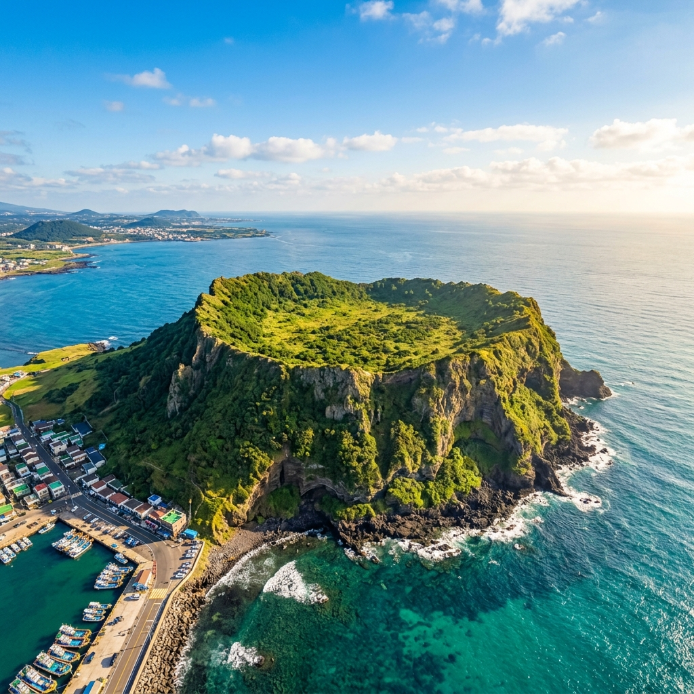
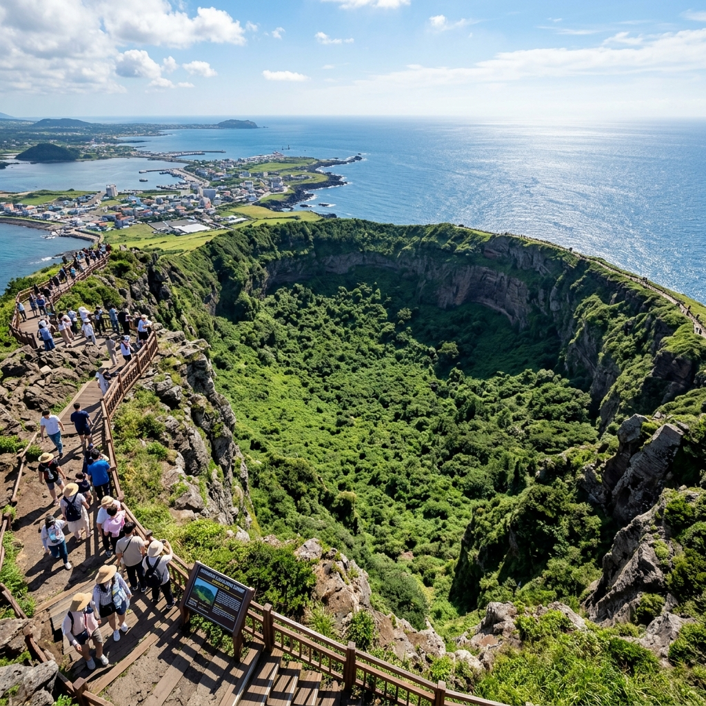
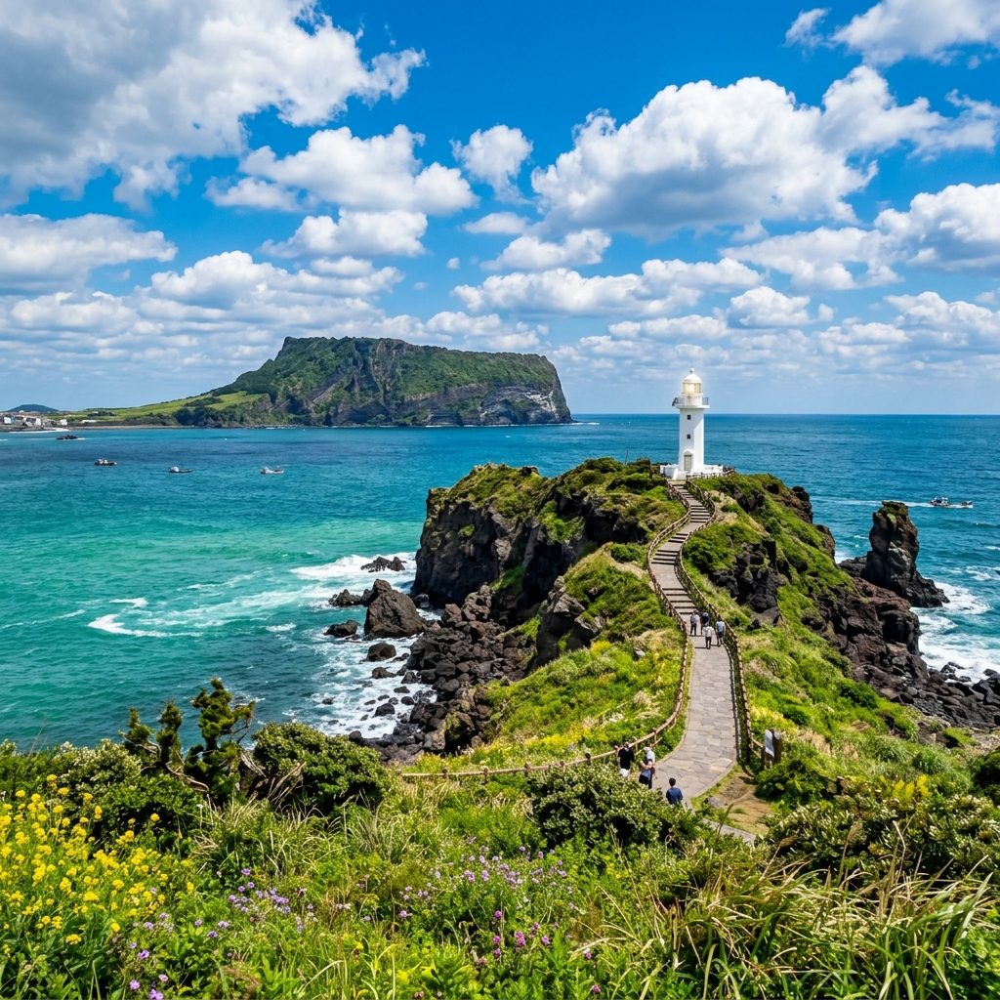

성산일출봉 일출 탐방기 — 이른 아침 정상에서 본 제주 분화구와 섭지코지 드라이브
✍️ 직접 가보니
새벽 4시 반에 숙소에서 나와 성산일출봉 매표소에 도착했을 때 이미 줄이 길었습니다. 제주 동쪽 끝이라 바람이 거세고, 반팔 차림으로 갔다가 오들오들 떨었던 기억이 납니다. 정상 분화구에 서면 바다에 둘러싸인 거대한 분지가 보이는데, 사진으로는 그 규모가 잘 전달이 안 됩니다. 직접 서야 알 수 있는 광경이었습니다. 탐방 후 바로 섭지코지로 차를 몰았는데, 아침 일찍이라 사람이 거의 없어서 오히려 더 좋았습니다.
성산일출봉은 언제 가는 것이 가장 좋을까
성산일출봉(城山日出峰)은 제주 서귀포시 성산읍에 위치한 유네스코 세계자연유산이자 국내에서 가장 유명한 일출 명소 중 하나입니다. 해발 182m의 수성화산으로, 바다에서 솟아오른 거대한 분화구가 특징입니다.
방문 시기는 크게 세 가지로 나뉩니다.
일출 탐방을 원한다면 일출 시각 1시간 전에 도착해야 합니다. 여름철 제주 일출 시각은 5시 20분~40분 사이로, 새벽 4시 반 출발이 기준입니다.
낮 시간 탐방은 조망이 선명하고 편하지만 인파가 많습니다.
해 질 녘 역광 풍경을 원한다면 오후 5~6시가 적합합니다.
여름에는 관람 시간이 오전 7시~오후 8시로 연장됩니다(계절·날씨에 따라 변동 가능하므로 방문 전 공식 홈페이지 확인 권장).

제주 성산일출봉 분화구 — 바다에 둘러싸인 화산 지형이 한눈에 들어옵니다
입장료와 주차 — 미리 알고 가야 할 것
입장료: 성인 2,000원, 청소년 1,000원, 어린이 1,000원 (제주도민 무료). 문화누리카드 사용 가능합니다.
주차: 성산일출봉 공식 주차장은 유료입니다(최초 30분 기본료 이후 추가 과금 구조, 현장 안내 확인). 주차 공간이 넉넉하지 않아 성수기 오전 7시 이전에는 이미 만차가 되는 경우가 있습니다. 대안으로 광치기 해변 방향 임시주차장을 활용하거나, 우도·섭지코지 투어와 묶어 렌터카를 반납 후 버스 이용도 고려해 볼 수 있습니다.
탐방 소요시간: 편도 약 20~30분. 경사도가 제법 있어서 서두르지 않는 것이 좋고, 정상 체류까지 포함하면 왕복 1시간 내외로 계획하면 됩니다.
탐방로 — 오르막 구간별 특징
성산일출봉 탐방로는 매표소 → 1구간(완만 계단) → 2구간(가파른 계단) → 정상 분화구 순으로 이어집니다.
1구간까지는 포장된 넓은 길이라 걷기 편합니다. 2구간부터 급경사가 시작되며, 계단 폭이 좁고 높이가 있어 운동화 착용이 필수입니다. 슬리퍼나 샌들로는 올라가기 어렵고, 비가 왔다면 미끄러우므로 특히 주의해야 합니다.
정상에 오르면 180도 파노라마로 우도와 제주 동부 해안선, 분화구 안쪽 초지가 한눈에 들어옵니다. 바람이 세게 불 때는 모자를 단단히 잡으세요.

정상에서 내려다본 분화구 — 바닥에는 초지와 밭이 펼쳐져 있습니다
솔직한 장단점 — 가기 전 알았으면 좋았을 것들
좋았던 점:
- 분화구 규모가 사진과는 비교할 수 없이 큽니다. 직접 봐야 그 압도감을 알 수 있습니다.
- 탐방로가 잘 정비되어 있어 어린이·어르신도 천천히 오를 수 있습니다.
- 이른 아침이면 관광객이 적어 여유롭게 즐길 수 있습니다.
아쉬웠던 점:
- 정상에 그늘이 없어 한낮에는 매우 덥습니다. 여름 낮 탐방은 피하는 것이 좋습니다.
- 입장료가 저렴하지만 매표소 대기가 길어질 수 있습니다.
- 주차가 빡빡합니다. 특히 오전 8시 이후에는 주차장 진입이 불편할 수 있습니다.
섭지코지 — 성산 탐방 후 이어서 가기 좋은 이유
성산일출봉에서 차로 10분 거리의 섭지코지는 현무암 절벽과 등대, 개방된 초지가 어우러진 해안 산책지입니다. 한 방향으로 쭉 뻗은 좁은 반도 지형이라, 차를 주차장에 세워두고 끝까지 걸어갔다가 돌아오는 왕복 코스(약 3km)가 기본입니다.
봄에는 유채꽃, 여름에는 수국·자생화가 피고, 성수기에는 카페와 포토존이 운영됩니다. 성산 탐방을 이른 아침에 마치고, 섭지코지에서 아침 바람을 맞으며 한 바퀴 걷고 근처에서 아침 식사를 하는 코스가 개인적으로 가장 좋았습니다.

섭지코지 해안 절벽 — 현무암과 파도가 만나는 제주의 여름 풍경
주변에서 먹을 것 — 성산·섭지코지 근처 식사
성산읍 시가지에는 고등어조림·전복뚝배기·흑돼지 등 제주식 백반을 파는 식당이 많습니다. 이른 아침에 탐방을 마친다면 오전 7시부터 문을 여는 식당을 미리 찾아두는 것이 좋습니다.
섭지코지 입구 쪽에는 카페와 편의점이 있어 탐방 후 음료를 사서 바다를 보며 쉬기도 좋습니다. 여름에는 빙수나 냉커피를 찾는 관광객이 많아 대기가 생길 수 있습니다.
💡 성산일출봉 여름 방문 실전 팁
· 일출 탐방이라면 새벽 4시 30분 이전 현장 도착 목표
· 바람이 강하므로 얇은 바람막이 필수
· 탐방 후 바로 섭지코지·광치기 해변으로 이동하면 동쪽 오전 코스 완성
· 오전 9시 이후 방문이라면 주차장 대신 주변 도로 주차 후 도보 이동도 고려
📝 작성자 메모
제주 동부를 두 번 다녀왔는데, 성산일출봉은 낮보다 새벽에 훨씬 좋았습니다. 관광지라 알고 가도 분화구 앞에 서면 자연의 규모에 압도됩니다. 섭지코지는 걷기 부담 없이 바다를 즐길 수 있어 일출봉과 묶어 반나절 코스로 추천합니다. 정보 기준일: 2026-07-07. 입장료·운영시간은 사전에 공식 채널에서 확인하세요.
#성산일출봉
#제주여름여행
#섭지코지
#제주성수기
#일출봉입장료
#제주드라이브코스
#세계자연유산
#제주관광
#성산읍여행
#제주당일치기